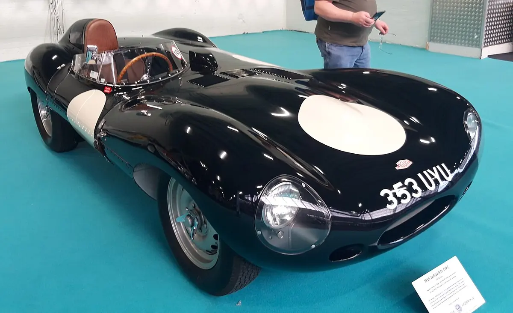
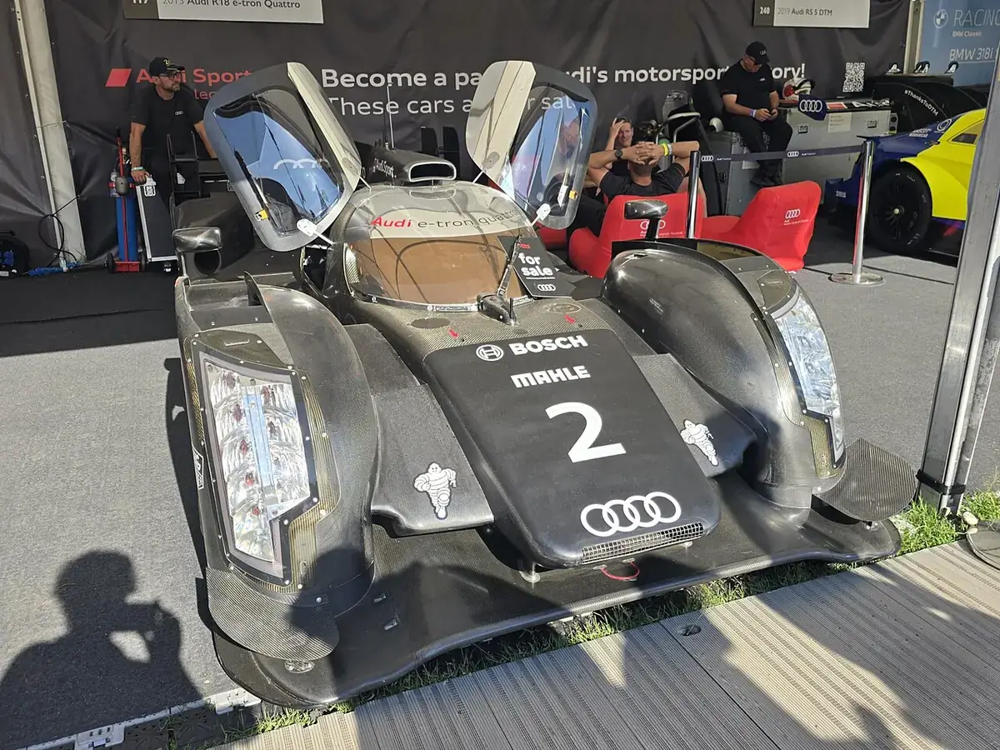
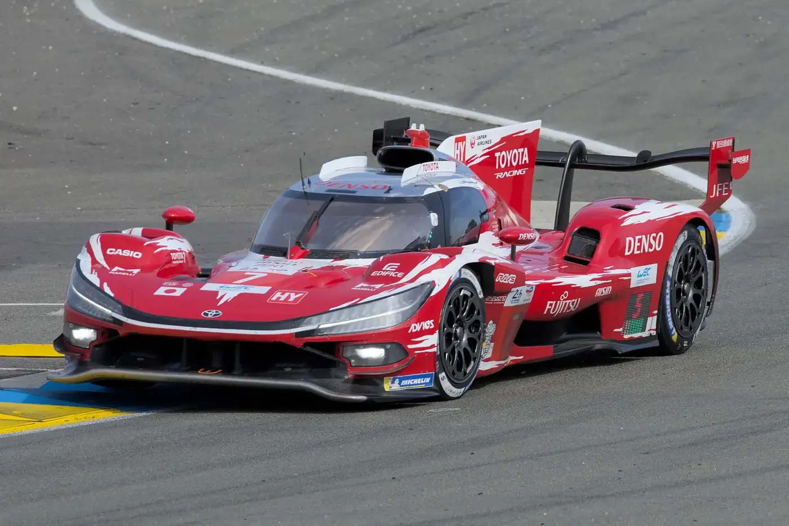

A centuryof legend
From the 1923 pioneers to hybrid hypercars, the moments that built the most famous race in the world.
- 1923
The first race
On 26 and 27 May, 33 cars start. André Lagache and René Léonard win in a Chenard & Walcker.
 1924
1924The "Bentley Boys"
Bentley wins for the first time. Between 1924 and 1930 the British brand takes five wins thanks to its wealthy, daring drivers.
- 1936
A year without a race
Strikes in France prevent the event from being held. The race is also interrupted from 1940 to 1948 because of the war.

1955The worst tragedy
A terrible accident kills more than 80 spectators. Circuit safety is then profoundly rethought.
 1966
1966Ford beats Ferrari
After years of Ferrari dominance, Ford scores a 1-2-3 with the GT40. The rivalry even inspired a film.
- 1969
The end of the running start
Jacky Ickx walks across the track in protest against the "Le Mans start" where drivers ran to their cars. He still wins! The running start is dropped the following year.
 1970
1970Porsche's first win
The legendary 917 gives Porsche the first of its 19 wins, a record.
 1978
1978France wins with Alpine
The Renault-Alpine A442B of Didier Pironi and Jean-Pierre Jaussaud wins.
 1991
1991Mazda's rotary engine
The Mazda 787B becomes the first Japanese car, and the only rotary-engined one, to win at Le Mans. Its scream is still famous.
- 1999
BMW wins
The V12 LMR gives BMW its only overall win.
- 2006
First diesel win
The Audi R10 TDI wins with a diesel engine. Audi takes 13 wins between 2000 and 2014; in 2012 the R18 e-tron quattro becomes the first hybrid winner.
 2009
2009Peugeot dethrones Audi
The Peugeot 908 HDi FAP scores a 1-2 and gives the Lion its third win.

2013Tom Kristensen's record
The Dane takes his 9th win, an all-time record. He is nicknamed "Mr Le Mans".
- 2016
Toyota's nightmare
Leading minutes from the end, Toyota #5 breaks down on the final lap. Porsche wins.
 2018
2018Toyota finally wins
With Fernando Alonso, Sébastien Buemi and Kazuki Nakajima, Toyota wins for the first time. Five wins follow up to 2022.
- 2021
The Hypercar era begins
The new Hypercar class replaces LMP1. Toyota wins with the GR010.
 2023
2023The centenary
Ferrari returns and wins at its first attempt with the 499P, in front of more than 300,000 spectators.

2026Toyota's comeback
After three Ferrari wins, the Toyota TR010 #7 wins ahead of the BMW #20.